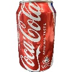
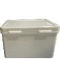
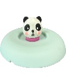

Towards Fine-Grained Object Manipulation: SAM3-Guided Visuomotor Policy with Persistent Memory Learning and Focused Visual Conditioning
1 Institute of Automation, Chinese Academy of Sciences, Beijing 100190, China
2 School of Artificial Intelligence, University of Chinese Academy of Sciences, Beijing 100049, China
3 Center for Excellence in Brain Science and Intelligence Technology, Chinese Academy of Sciences, Shanghai 200031, China
4 State Key Laboratory of Brain Cognition and Brain-Inspired Intelligence Technology, Shanghai 200031, China


Abstract
Main experiment videos are played at 8× speed.
Method


Real-Robot Manipulation Experiments
DemoFO
Collect Can Push Box Lid Cup



Manipulate NewFO with Shared Policy
Citation
BibTeXarXiv 2026
@article{meng2026finegrained,
title={Towards Fine-Grained Object Manipulation: SAM3-Guided Visuomotor Policy with Persistent Memory Learning and Focused Visual Conditioning},
author={Meng, Haolong and Qin, Fangbo and Bai, Mengchen and Wang, Houwu and Liu, Xiaolin and Liu, Cirong and Yu, Shan},
journal={arXiv preprint arXiv:2609.21621},
year={2026}
}